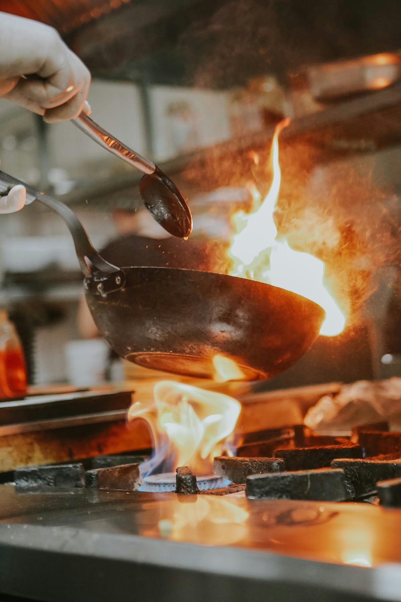

Kraków + Małopolska · dojazd do klienta
Naprawimy, zainstalujemy
Naprawimy, zainstalujemy
i zaopiekujemy się Twoją kuchnią.
Serwis i montaż profesjonalnego sprzętu gastronomicznego — piece konwekcyjne, zmywarki, ekspresy, salamandry. Uprawnienia gazowe i elektryczne, ponad 10 lat na rynku.
10+
lat doświadczenia
<4h
czas reakcji w Krakowie
200+
stałych klientów B2B

Dlaczego my
Poznaj nas →
Cztery powody, dla których kuchnie profesjonalne wracają.
01
Doświadczenie
Ponad 10 lat na rynku, kilkaset uruchomionych linii kuchennych w Małopolsce.
02
Uprawnienia
Gaz, SEP do 1 kV, certyfikaty producenckie — pełna dokumentacja po każdej wizycie.
03
Reakcja
Awaria w godzinach pracy? W Krakowie przyjeżdżamy tego samego dnia.
04
Lokalność
Znamy każdą małopolską restaurację, hotel i stołówkę. Dojeżdżamy bez ograniczeń.
Usługi
Wszystkie usługi →
Co dla Ciebie zrobimy.
01
Montaż i instalacja
Pełne uruchomienie linii kuchennej z protokołem i szkoleniem obsługi.
Zobacz usługę →
02
Serwis i przeglądy
Plan obsługi 6 / 12 miesięcy dopasowany do intensywności pracy kuchni.
Zobacz usługę →
03
Naprawy interwencyjne
Diagnoza i naprawa „od ręki” w Krakowie, czas reakcji do 4h.
Zobacz usługę →
04
Modernizacje
Przenoszenie i rozbudowa istniejących linii kuchennych.
Zobacz usługę →
05
Audyty techniczne
Ekspertyza stanu sprzętu przed zakupem lokalu lub odbiorem inwestycji.
Zobacz usługę →
06
Doradztwo zakupowe
Dobór urządzeń pod menu i przepustowość — bez prowizji od marek.
Zobacz usługę →
Urządzenia
Wszystkie kategorie →
Serwisujemy większość urządzeń dostępnych na rynku.
Klienci o nas
Współpracujemy z najlepszymi kuchniami w Krakowie.
„Szybki serwis i bezproblemowy kontakt — współpraca zawsze przebiega bez zakłóceń.”
Marcin · szef kuchni, Kazimierz
„Z Mariuszem współpracujemy kilka lat. Zawsze wesprze poradą i dobiera najlepsze rozwiązania.”
Lidia · właścicielka, hotel butikowy
„Montaż sprzętu dla naszej restauracji przebiegł sprawnie i — co najważniejsze — w terminie.”
Kasia · manager, restauracja Stare Miasto
24h reakcja
Awaria w godzinach pracy kuchni?
Zadzwoń. W Krakowie przyjeżdżamy tego samego dnia, najczęściej w ciągu 4 godzin.